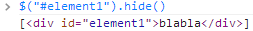
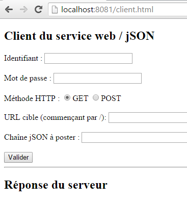
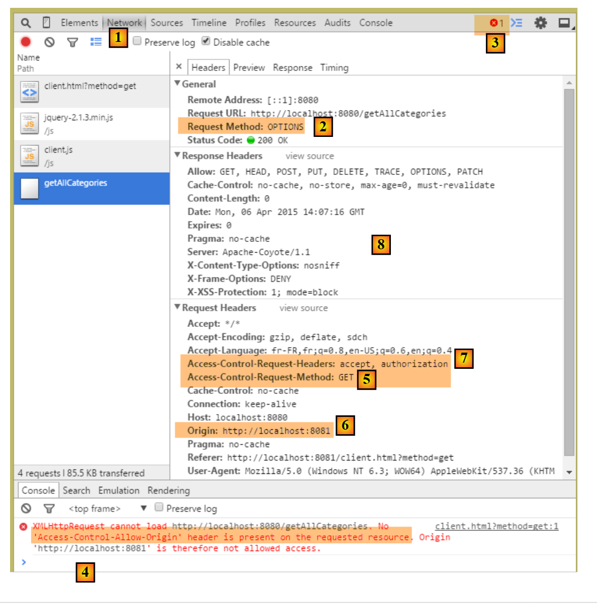
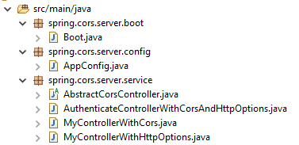
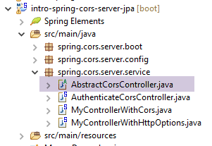
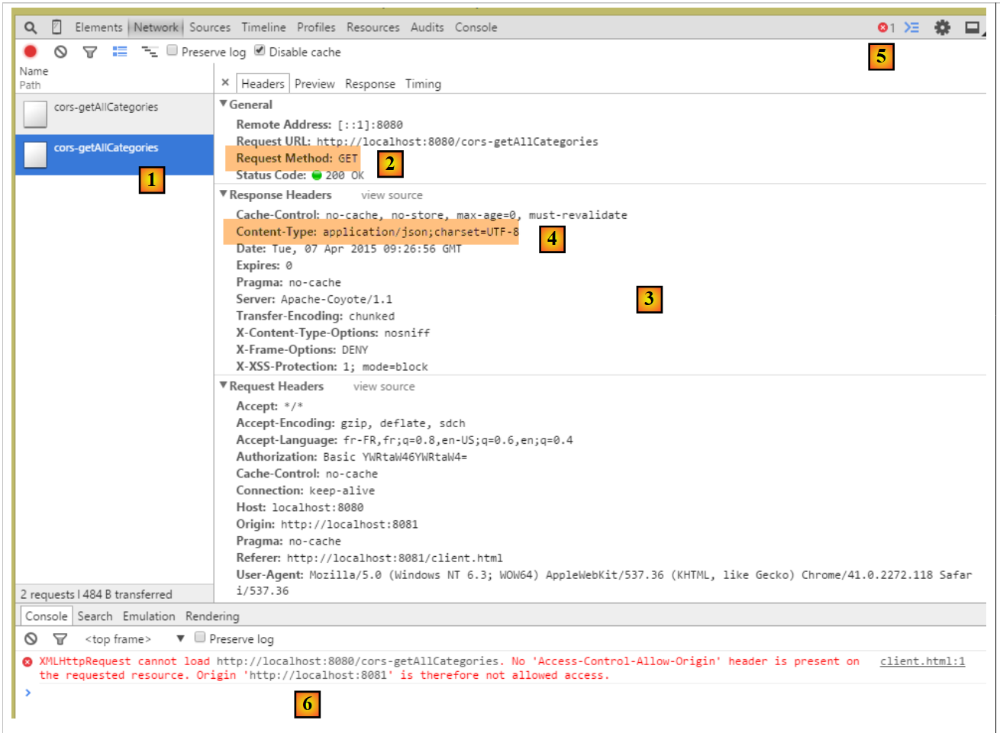
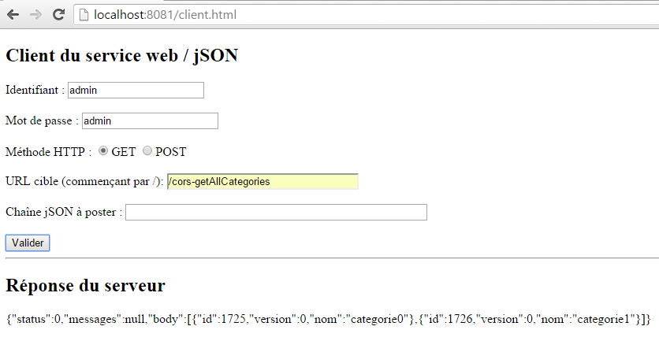
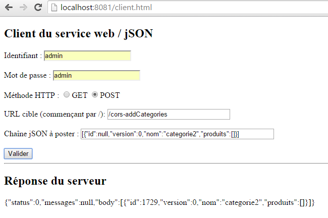
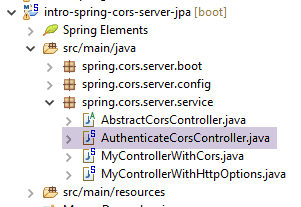

18. [Curso]: Intercambio de recursos entre orígenes
Palabras clave: CORS (Compartir recursos entre orígenes).
Este capítulo queda algo fuera del alcance del tutorial. Se ha incluido porque introduce la programación web y la programación en JavaScript. Es importante recordar que uno de los objetivos de este tutorial es presentar conceptos que se utilizan con frecuencia en el desarrollo JEE, es decir, el desarrollo web basado en marcos de trabajo de Java. Aquí ampliamos el servidor web utilizado en el estudio de la base de datos de productos y categorías para que pueda aceptar solicitudes entre dominios.
En el documento [Tutorial de AngularJS / Spring 4], desarrollamos una aplicación cliente/servidor en la que el cliente es una aplicación AngularJS:
 |
- las páginas HTML/CSS/JS de la aplicación Angular provienen del servidor [1];
- en [2], el servicio [dao] realiza una solicitud a otro servidor, el servidor [2]. Sin embargo, el navegador que ejecuta la aplicación Angular lo prohíbe, ya que se trata de una vulnerabilidad de seguridad. La aplicación solo puede consultar el servidor del que procede, es decir, el servidor [1];
De hecho, no es exacto decir que el navegador impide que la aplicación Angular consulte al servidor [2]. En realidad, lo consulta para preguntarle si permite que un cliente que no proviene de él lo consulte. Esta técnica de intercambio se denomina CORS (Cross-Origin Resource Sharing). El servidor [2] concede el permiso enviando encabezados HTTP específicos.
Crearemos la siguiente arquitectura:
 |
- en [1], una aplicación web sirve páginas HTML/JS;
- en [2], el navegador ejecuta el JavaScript incrustado en las páginas HTML para consultar el servicio web seguro [3];
18.1. Soporte
 |
Los proyectos de este capítulo se encuentran en la carpeta [support / chap-18].
18.2. El proyecto del cliente
Crea el siguiente proyecto de Eclipse:
 |
18.3. Configuración de Maven
El proyecto es un proyecto Maven con el siguiente archivo [pom.xml]:
<project xmlns="http://maven.apache.org/POM/4.0.0" xmlns:xsi="http://www.w3.org/2001/XMLSchema-instance"
xsi:schemaLocation="http://maven.apache.org/POM/4.0.0 http://maven.apache.org/xsd/maven-4.0.0.xsd">
<modelVersion>4.0.0</modelVersion>
<groupId>istia.st.webjson</groupId>
<artifactId>intro-server-webjson-01</artifactId>
<version>0.0.1-SNAPSHOT</version>
<name>intro-server-webjson-01</name>
<description>démo spring mvc</description>
<parent>
<groupId>org.springframework.boot</groupId>
<artifactId>spring-boot-starter-parent</artifactId>
<version>1.2.7.RELEASE</version>
</parent>
<dependencies>
<dependency>
<groupId>istia.st.springdata</groupId>
<artifactId>intro-spring-data-01</artifactId>
<version>0.0.1-SNAPSHOT</version>
</dependency>
<dependency>
<groupId>org.springframework.boot</groupId>
<artifactId>spring-boot-starter-web</artifactId>
</dependency>
</dependencies>
<build>
<plugins>
<plugin>
<groupId>org.springframework.boot</groupId>
<artifactId>spring-boot-maven-plugin</artifactId>
</plugin>
<plugin>
<groupId>org.apache.maven.plugins</groupId>
<artifactId>maven-surefire-plugin</artifactId>
<version>2.18.1</version>
</plugin>
</plugins>
</build>
</project>
- líneas 11–15: este es un proyecto Spring Boot;
- líneas 23–26: utilizamos la dependencia [spring-boot-starter-web], que incluye un servidor Tomcat y Spring MVC;
18.4. Configuración de Spring
 |
La clase [WebConfig] que configura el proyecto Spring es la siguiente:
package spring.cors.client.config;
import org.springframework.beans.factory.annotation.Autowired;
import org.springframework.boot.context.embedded.EmbeddedServletContainerFactory;
import org.springframework.boot.context.embedded.ServletRegistrationBean;
import org.springframework.boot.context.embedded.tomcat.TomcatEmbeddedServletContainerFactory;
import org.springframework.context.ApplicationContext;
import org.springframework.context.annotation.Bean;
import org.springframework.web.context.WebApplicationContext;
import org.springframework.web.servlet.DispatcherServlet;
import org.springframework.web.servlet.config.annotation.EnableWebMvc;
import org.springframework.web.servlet.config.annotation.ResourceHandlerRegistry;
import org.springframework.web.servlet.config.annotation.WebMvcConfigurerAdapter;
@EnableWebMvc
public class WebConfig extends WebMvcConfigurerAdapter {
// -------------------------------- layer configuration [web]
@Autowired
private ApplicationContext context;
@Bean
public DispatcherServlet dispatcherServlet() {
DispatcherServlet servlet = new DispatcherServlet((WebApplicationContext) context);
return servlet;
}
@Bean
public ServletRegistrationBean servletRegistrationBean(DispatcherServlet dispatcherServlet) {
return new ServletRegistrationBean(dispatcherServlet, "/*");
}
@Bean
public EmbeddedServletContainerFactory embeddedServletContainerFactory() {
return new TomcatEmbeddedServletContainerFactory("", 8081);
}
@Override
public void addResourceHandlers(ResourceHandlerRegistry registry) {
registry.addResourceHandler("/*.html").addResourceLocations("classpath:/static/");
registry.addResourceHandler("/*.js").addResourceLocations("classpath:/static/js/");
}
}
- línea 15: la clase configura un proyecto Spring MVC;
- línea 16: la clase extiende la clase [WebMvcConfigurerAdapter] para sobrescribir algunos de sus métodos;
- líneas 18–36: ya nos hemos encontrado con estos beans, por ejemplo, en la sección 13.5.3.1. Obsérvese, en la línea 35, que el servicio web se ejecutará en el puerto 8081;
- líneas 38–42: el método [addResourceHandlers] permite definir recursos estáticos, es decir, recursos que no gestiona el [DispatcherServlet] de la línea 23;
- línea 40: cualquier solicitud de un recurso con la extensión .html devolverá el archivo solicitado y que se encuentre en la carpeta [static] de la ruta de clases del proyecto;
- línea 41: cualquier solicitud de un recurso con la extensión .js devolverá el archivo JavaScript solicitado y que se encuentre en la carpeta [static/js] de la ruta de clases del proyecto;
 |
18.5. Conceptos básicos de jQuery y JavaScript
La página HTML del cliente tendrá el siguiente aspecto:
 |
Incluirá código JavaScript (JS) que se ejecuta en el navegador. Repasaremos algunos conceptos básicos de JavaScript para ayudarnos a entender el código. El cliente realizará solicitudes HTTP utilizando la biblioteca jQuery [https://jquery.com/], que ofrece muchas funciones que simplifican el desarrollo en JavaScript. Creamos un archivo HTML estático [jQuery.html] y lo colocamos en la carpeta [static]:
 |
Este archivo tendrá el siguiente contenido:
<!DOCTYPE html>
<html xmlns="http://www.w3.org/1999/xhtml">
<head>
<meta http-equiv="Content-Type" content="text/html; charset=utf-8" />
<title>JQuery-01</title>
<script type="text/javascript" src="/jquery-2.1.3.min.js"></script>
</head>
<body>
<h3>Rudiments de JQuery</h3>
<div id="element1">Elément 1</div>
</body>
</html>
- línea 6: importación de jQuery;
- Líneas 10–12: un elemento de página con el ID [element1]. Vamos a trabajar con este elemento.
Tenemos que descargar el archivo [jquery-2.1.3.min.js]. La última versión de jQuery se puede encontrar en la URL [http://jquery.com/download/]:

Coloca el archivo descargado en la carpeta [static/js] y actualiza la línea 6 del archivo HTML para que coincida con la versión instalada.
Una vez hecho esto, abre la vista estática [jQuery.html] en Chrome [1-2]:
 |
En Google Chrome, pulsa [Ctrl-Shift-I] para abrir las herramientas de desarrollo [3]. La pestaña [Consola] [4] te permite ejecutar código JavaScript. A continuación, te proporcionamos los comandos JavaScript que debes escribir y te explicamos para qué sirven.
|
: devuelve la colección de todos los elementos con el ID [element1], por lo que normalmente es una colección de 0 o 1 elemento , ya que no se pueden tener dos ID idénticos en una página HTML. |  |
|
: establece el texto [blabla] para todos los elementos de la colección. Esto cambia el contenido que muestra la página |  |
|
oculta los elementos de la colección. El texto [blabla] ya no se muestra. |   |
|
: vuelve a mostrar la colección. Esto nos permite ver que el elemento con el ID [element1] tiene el atributo CSS style='display: none;', lo que hace que el elemento quede oculto. | |
|
: muestra los elementos de la colección. El texto [blabla] vuelve a aparecer. Es el style='display: block;' lo que garantiza esta visualización. |  |
|
: establece un atributo en todos los elementos de la colección. El atributo aquí es [style] y su valor [color: red]. El texto [blabla] se vuelve rojo. |  |
 | |
 |
Fíjate en que la URL del navegador no ha cambiado durante todas estas operaciones. No ha habido comunicación con el servidor web. Todo ocurre dentro del navegador. Ahora, veamos el código fuente de la página:
 |  |
Este es el texto inicial. No refleja los cambios que hemos realizado en el elemento de las líneas 10 a 12. Es importante tener esto en cuenta al depurar JavaScript. Por lo tanto, a menudo no es necesario consultar el código fuente de la página mostrada.
18.6. El código JavaScript de la aplicación
Volvamos a la página de la aplicación cliente que consultará el servicio web / jSON:
 |
 |
El código HTML de esta página es el siguiente:
<!DOCTYPE html>
<html>
<head>
<meta charset="UTF-8">
<title>Spring MVC</title>
<script type="text/javascript" src="/jquery-2.1.3.min.js"></script>
<script type="text/javascript" src="/client.js"></script>
</head>
<body>
<h2>Client du service web / jSON</h2>
<form id="formulaire">
<!-- identifier -->
Identifiant :
<!-- -->
<input type="text" id="identifiant" name="identifiant" value="" />
<!-- password -->
<br /> <br /> Mot de passe :
<!-- -->
<input type="text" id="password" name="password" value="" />
<!-- method HTTP -->
<br /> <br /> Méthode HTTP :
<!-- -->
<input type="radio" id="get" name="method" value="get"
checked="checked" />GET
<!-- -->
<input type="radio" id="post" name="method" value="post" />POST
<!-- URL -->
<br /> <br />URL cible (commençant par /): <input type="text"
id="url" size="30"><br />
<!-- posted value -->
<br /> Chaîne jSON à poster : <input type="text" id="posted"
size="50" />
<!-- validation button -->
<br /> <br /> <input type="button" value="Valider"
onclick="javascript:requestServer()"></input>
</form>
<hr />
<h2>Réponse du serveur</h2>
<div id="response"></div>
</body>
</html>
- línea 6: importamos la biblioteca jQuery;
- línea 7: importamos el código que vamos a escribir;
- Líneas 15, 19, 26, 29, 31: Fíjate en los identificadores [id] de los componentes de la página. El JavaScript hace referencia a estos componentes a través de estos identificadores;
El código [client.js] es el siguiente:
// global data
var url;
var posted;
var response;
var method;
var baseUrl = 'http://localhost:8080';
var identifiant;
var password;
var authorizationHeader;
function requestServer() {
// information retrieval
var urlValue = url.val();
var postedValue = posted.val();
var identifiantValue = identifiant.val();
var passwordValue = password.val();
var method = document.forms[0].elements['method'].value;
authorizationCode = btoa(identifiantValue + ':' + passwordValue);
// delete the previous answer
response.text("");
// make a manual Ajax call
if (method === "get") {
doGet(urlValue);
} else {
doPost(urlValue, postedValue);
}
}
function doGet(url) {
// make a manual Ajax call
$.ajax({
headers : {
'Authorization':'Basic '+authorizationCode
},
url : baseUrl + url,
type : 'GET',
dataType : 'text',
beforeSend : function() {
},
success : function(data) {
// text result
response.text(data);
},
complete : function() {
},
error : function(jqXHR) {
// system error
response.text(JSON.stringify(jqXHR.statusCode()));
}
})
}
function doPost(url, posted) {
// make a manual Ajax call
$.ajax({
headers : {
'Authorization':'Basic '+authorizationCode
},
url : baseUrl + url,
type : 'POST',
contentType : 'application/json; charset=UTF-8',
data : posted,
dataType : 'text',
beforeSend : function() {
},
success : function(data) {
// text result
response.text(data);
},
complete : function() {
},
error : function(jqXHR) {
// system error
response.text(JSON.stringify(jqXHR.statusCode()));
}
})
}
// document loading
$(document).ready(function() {
// retrieve page component references
identifiant = $("#identifiant");
password = $("#password");
url = $("#url");
posted = $("#posted");
response = $("#response");
});
- líneas 80–87: código JavaScript ejecutado una vez que el documento ha terminado de cargarse en el navegador;
- líneas 81-86: recupera las referencias de los distintos elementos del documento HTML a través de sus identificadores [id];
- líneas 2-9: variables globales accesibles en todas las funciones definidas en el archivo JavaScript;
- línea 13: recupera la URL introducida por el usuario;
- línea 14: recupera el valor que el usuario desea enviar (vacío si se trata de una operación GET);
- línea 15: recupera el nombre de usuario introducido por el usuario;
- línea 16: recupera su contraseña;
- línea 17: recupera el método [get] o [post] que se utilizará al solicitar la URL de la línea 9:
- [document] se refiere al documento cargado por el navegador, conocido como DOM (Modelo de Objetos del Documento),
- [document.forms[0]] se refiere al primer formulario del documento; un documento puede contener varios formularios. Aquí solo hay uno,
- [document.forms[0].elements['method']] se refiere al elemento del formulario con el atributo [name='method']. Hay dos:
<input type="radio" id="get" name="method" value="get" checked="checked" />GET
<input type="radio" id="post" name="method" value="post" />POST
- (continuación)
- [document.forms[0].elements['method'].value] es el valor que se enviará para el componente con el atributo [name='method']. Sabemos que el valor enviado es el valor del atributo [value] del botón de radio seleccionado. Por lo tanto, aquí será una de las cadenas ['get', 'post'];
- línea 18: construimos la codificación Base74 de la cadena `username:password`. Esta cadena codificada se utilizará en el encabezado HTTP [Authorization] que enviaremos al servidor para autenticar la solicitud;
- líneas 22–26: dependiendo del método HTTP que se vaya a utilizar, ejecutamos el método [doGet] o [doPost];
- El método jQuery [$.ajax] realiza una solicitud HTTP;
- líneas 32–34: nos comunicamos con un servidor que requiere un encabezado HTTP [Authorization: Basic code];
- línea 35: el usuario introducirá URL del tipo [/cors-getAllCategories,/cors-addProduits, ...]. Por lo tanto, estas URL deben completarse con la URL del servidor de la línea 6;
- línea 36: método HTTP a utilizar;
- línea 37: el servidor devuelve JSON. Especificamos el tipo [text] como tipo de resultado para mostrarlo tal y como se ha recibido;
- línea 42: muestra la respuesta de texto del servidor;
- líneas 48-49: muestra cualquier mensaje de error;
- línea 53: el método [doPost] recibe un segundo parámetro, que es el valor que se va a enviar;
- línea 61: para indicar que el valor enviado tendrá la forma de una cadena JSON;
18.7. Ejecución del cliente
La aplicación cliente es una aplicación Spring Boot iniciada por la siguiente clase ejecutable [Boot]:
 |
package spring.cors.client.boot;
import org.springframework.boot.SpringApplication;
import spring.cors.client.config.WebConfig;
public class Boot {
public static void main(String[] args) {
SpringApplication.run(WebConfig.class, args);
}
}
- Línea 10: El método [SpringApplication.run] utiliza el archivo de configuración [WebConfig]. La página [client.html] se implementará en el servidor Tomcat presente en la ruta de clases del proyecto;
18.8. La URL [/getAllCategories]
Iniciamos:
- el servidor web/JSON en el puerto 8080;
- el cliente para este servidor en el puerto 8081;
luego solicitamos la URL [http://localhost:8081/client.html] [1]:
 |
- en [2], realizamos una solicitud GET a la URL [http://localhost:8080/getAllCategories];
No recibimos respuesta del servidor. Al consultar la consola de desarrolladores de Chrome (Ctrl-Mayús-I), vemos un error:
 |
- en [1], estamos en la pestaña [Red];
- En [2], vemos que la solicitud HTTP realizada no es [GET], sino [OPTIONS]. En el caso de una solicitud entre dominios, el navegador comprueba con el servidor que se cumplen ciertas condiciones enviando una solicitud HTTP [OPTIONS]. En este caso, las solicitudes son las indicadas por los marcadores [5-6];
- en [5], el navegador pregunta si se puede acceder a la URL de destino con un GET. El encabezado de solicitud [Access-Control-Request-Method] solicita una respuesta con un encabezado HTTP [Access-Control-Allow-Methods] que indique que el método solicitado es aceptado;
- en [6], el navegador envía el encabezado HTTP [Origin: http://localhost:8081]. Este encabezado solicita una respuesta en un encabezado HTTP [Access-Control-Allow-Origin] que indique que se acepta el origen especificado;
- En [7], el navegador pregunta si se aceptan los encabezados HTTP [Accept] y [Authorization]. El encabezado de solicitud [Access-Control-Request-Headers] espera una respuesta con un encabezado HTTP [Access-Control-Allow-Headers] que indique que se aceptan los encabezados solicitados;
- Se produce un error en [3]. Al hacer clic en el icono se produce el error [4];
- en [4], el mensaje indica que el servidor no envió el encabezado HTTP [Access-Control-Allow-Origin], que especifica si se acepta el origen de la solicitud;
- En [8], podemos ver que, efectivamente, el servidor no envió este encabezado. Como resultado, el navegador se negó a realizar la solicitud HTTP GET que se había solicitado inicialmente;
Tenemos que modificar el servidor web / JSON.
18.9. El nuevo servicio web / json
Creamos un nuevo proyecto Maven [intro-spring-cors-server-jpa]:
 |  |
18.9.1. Configuración de Maven
La configuración de Maven para el nuevo servicio web es la siguiente:
<project xmlns="http://maven.apache.org/POM/4.0.0" xmlns:xsi="http://www.w3.org/2001/XMLSchema-instance"
xsi:schemaLocation="http://maven.apache.org/POM/4.0.0 http://maven.apache.org/xsd/maven-4.0.0.xsd">
<modelVersion>4.0.0</modelVersion>
<groupId>istia.st.cors</groupId>
<artifactId>spring-cors-server-jpa</artifactId>
<version>0.0.1-SNAPSHOT</version>
<name>spring-cors-server-jpa</name>
<description>démo spring cors</description>
<properties>
<project.build.sourceEncoding>UTF-8</project.build.sourceEncoding>
<java.version>1.8</java.version>
</properties>
<parent>
<groupId>org.springframework.boot</groupId>
<artifactId>spring-boot-starter-parent</artifactId>
<version>1.2.7.RELEASE</version>
</parent>
<dependencies>
<dependency>
<groupId>istia.st.spring.security</groupId>
<artifactId>intro-spring-security-server-01</artifactId>
<version>0.0.1-SNAPSHOT</version>
</dependency>
</dependencies>
<!-- plugins -->
<build>
<plugins>
<plugin>
<groupId>org.springframework.boot</groupId>
<artifactId>spring-boot-maven-plugin</artifactId>
</plugin>
<plugin>
<groupId>org.apache.maven.plugins</groupId>
<artifactId>maven-surefire-plugin</artifactId>
<version>2.18.1</version>
</plugin>
</plugins>
</build>
</project>
- Líneas 23–27: Recuperamos todos los datos del trabajo realizado hasta ahora accediendo al archivo /json del servidor web seguro;
18.9.2. Configuración de Spring
La clase de configuración [AppConfig] es la siguiente:
 |
package spring.cors.server.config;
import org.springframework.context.annotation.Bean;
import org.springframework.context.annotation.ComponentScan;
import org.springframework.context.annotation.Configuration;
import org.springframework.context.annotation.Import;
import spring.security.config.SecurityConfig;
@Configuration
@ComponentScan(basePackages = { "spring.cors.server.service" })
@Import({ SecurityConfig.class })
public class AppConfig {
// cross-domain queries
@Bean
public boolean isCorsEnabled() {
return true;
}
}
- línea 10: la clase es una clase de configuración de Spring;
- línea 11: se pueden encontrar otros componentes de Spring en el paquete [spring.cors.server.service];
- líneas 16–19: creamos un componente Spring denominado [isCorsEnabled] que indica si se aceptan o no clientes fuera del dominio del servidor;
18.9.3. La clase [AbstractCorsController]
La clase [AbstractCorsController], que será la clase padre de todos los controladores de esta aplicación:
 |
Su código es el siguiente:
package spring.cors.server.service;
import javax.servlet.http.HttpServletResponse;
import org.springframework.beans.factory.annotation.Autowired;
public abstract class AbstractCorsController {
@Autowired
private boolean isCorsEnabled;
// sending options to the customer
public void setHeaders(String origin, HttpServletResponse response) {
// Cors allowed ?
if (!isCorsEnabled || origin == null || !origin.startsWith("http://localhost")) {
return;
}
// set header CORS
response.addHeader("Access-Control-Allow-Origin", origin);
// certain headers are allowed
response.addHeader("Access-Control-Allow-Headers", "accept, authorization");
// we authorize GET
response.addHeader("Access-Control-Allow-Methods", "GET");
}
}
- línea 7: la clase [CorsController] es abstracta porque está diseñada para ser extendida, no instanciada;
- líneas 13–24: el método [setHeaders] añade los encabezados HTTP requeridos por las solicitudes entre dominios a la [HttpServletResponse response] (línea 13) enviada al cliente;
- línea 33: el método [setHeaders] acepta como parámetros:
- la cadena [origin] presente en el encabezado HTTP [Origin] de las solicitudes entre dominios:
En este caso, el parámetro [origin] de la línea 13 tendría el valor [http://localhost:8081]. Si la solicitud no contiene el encabezado HTTP [Origin], nos aseguraremos de que [origin==null];
- (continuación)
- el objeto [HttpServletResponse response] que se devolverá al cliente que realizó la solicitud;
Estos dos parámetros son inyectados por Spring;
- líneas 15–175: si la aplicación está configurada para aceptar solicitudes entre dominios, y si el remitente ha enviado el encabezado HTTP [Origin], y si este origen comienza por [http://localhost], entonces se acepta la solicitud entre dominios; de lo contrario, se rechaza;
- Línea 19: Si el cliente se encuentra en el dominio [http://localhost:port], enviamos el encabezado HTTP:
Access-Control-Allow-Origin: http://localhost:port
lo que significa que el servidor acepta el origen del cliente;
- línea 21: hemos especificado dos encabezados HTTP concretos en la solicitud HTTP [OPTIONS]:
En respuesta al encabezado HTTP [Access-Control-Request-X], el servidor responde con un encabezado HTTP [Access-Control-Allow-X] que especifica lo que está permitido. Las líneas 20–23 simplemente repiten la solicitud del cliente para indicar que se acepta;
18.9.4. El controlador [MyControllerWithHttpOptions]
Para evitar tener que modificar el servidor web/JSON inseguro [intro-server-webjson-01] descrito en la sección 13.5.3, crearemos un nuevo controlador. Mientras que el servidor inseguro gestiona la URL [/url], el nuevo controlador gestionará la URL [/cors-url], y esta URL aceptará solicitudes de origen cruzado.
La clase [MyControllerWithHttpOptions] es el controlador que gestionará las solicitudes HTTP de tipo [OPTIONS]:
 |
package spring.cors.server.service;
import javax.servlet.http.HttpServletRequest;
import javax.servlet.http.HttpServletResponse;
import org.springframework.stereotype.Controller;
import org.springframework.web.bind.annotation.PathVariable;
import org.springframework.web.bind.annotation.RequestHeader;
import org.springframework.web.bind.annotation.RequestMapping;
import org.springframework.web.bind.annotation.RequestMethod;
import com.fasterxml.jackson.core.JsonProcessingException;
@Controller
public class MyControllerWithHttpOptions extends AbstractCorsController {
@RequestMapping(value = "/cors-getAllCategories", method = RequestMethod.OPTIONS)
public void getAllCategories(@RequestHeader(value = "Origin", required = false) String origin,
HttpServletResponse httpServletResponse){
// headers CORS
setHeaders(origin, httpServletResponse);
}
...
- línea 14: la clase es un controlador Spring MVC;
- línea 15: la clase [MyControllerWithHttpOptions] extiende la clase [AbstractCorsController] que acabamos de describir;
- líneas 17-18: el método [getAllCategories] (línea 18) gestiona la URL ["/cors-getAllCategories"] cuando se solicita con el método HTTP [OPTIONS];
- línea 18: el método [getAllCategories] acepta dos parámetros:
- [@RequestHeader(value = "Origin", required = false) String origin] para recuperar el valor del encabezado HTTP [Origin:http://localhost:8081] cuando esté presente. En este ejemplo, el parámetro [String origin] recibirá el valor [http://localhost:8081]. Este encabezado no es obligatorio [required = false]. Cuando no está presente, el parámetro [String origin] tendrá el valor null;
- [HttpServletResponse httpServletResponse]: la respuesta que se enviará al cliente;
- línea 21: enviamos los encabezados HTTP que permiten las solicitudes de origen cruzado. El método [setHeaders] se define en la clase padre [AbstractCorsController];
Esto se hace para todas las URL expuestas por el servidor web/JSON no seguro [intro-server-webjson-01] comentado en la sección 13.5.3. Cuando este servicio expone la URL [/url], la clase [MyControllerWithHttpOptions] anterior expone la URL [/cors-url].
18.9.5. El controlador [MyControllerWithCors]
 |
La clase [MyControllerWithCors] es el controlador que gestionará las solicitudes HTTP [GET] y [POST]:
package spring.cors.server.service;
import javax.servlet.http.HttpServletRequest;
import javax.servlet.http.HttpServletResponse;
import org.springframework.beans.factory.annotation.Autowired;
import org.springframework.web.bind.annotation.PathVariable;
import org.springframework.web.bind.annotation.RequestHeader;
import org.springframework.web.bind.annotation.RequestMapping;
import org.springframework.web.bind.annotation.RequestMethod;
import org.springframework.web.bind.annotation.ResponseBody;
import com.fasterxml.jackson.core.JsonProcessingException;
import spring.webjson.service.MyController;
@Controller
public class MyControllerWithCors extends AbstractCorsController {
// spring dependencies
@Autowired
private MyController myController;
...
@RequestMapping(value = "/cors-getAllCategories", method = RequestMethod.GET, produces = "application/json; charset=UTF-8")
@ResponseBody
public String getAllCategories(@RequestHeader(value = "Origin", required = false) String origin,
HttpServletResponse httpServletResponse) throws JsonProcessingException {
// answer
return myController.getAllCategories();
}
...
- línea 17: la clase [MyControllerWithCors] es un controlador Spring MVC
- línea 18: extiende la clase [AbstractCorsController];
- líneas 21–22: inyección del controlador [MyController] desde el servidor web no seguro / JSON [intro-server-webjson-01] descrito en la sección 13.5.3;
- líneas 25–27: el método [getAllCategories] gestiona la URL [/cors-getAllCategories] (línea 28) cuando se solicita mediante el método HTTP [GET];
- línea 26: el resultado del método [getAllCategories] se enviará al cliente. Este resultado es un flujo JSON (el atributo [produces] en la línea 27 y el tipo [String] del resultado en la línea 25);
- línea 27: el método recibe los mismos parámetros que el método [getAllCategories] del controlador [MyControllerWithHttpOptions] que acabamos de examinar;
- línea 30: se invoca el método [myController.getAllCategories()] para enviar la respuesta;
En definitiva, es el método [myController.getAllCategories()] del servidor no seguro el que envía la respuesta. Simplemente hemos enriquecido su respuesta con los encabezados necesarios para las solicitudes entre dominios.
Esto se hace para todas las URL expuestas por el servidor web/JSON no seguro [intro-server-webjson-01] comentado en la sección 13.5.3. Cuando este servicio expone la URL [/url], la clase [MyControllerWithCors] anterior expone la URL [/cors-url].
Una solicitud entre dominios se desarrollará de la siguiente manera:
- el código JavaScript del cliente solicita la URL [/cors-url] mediante una solicitud HTTP GET o POST;
- el navegador que ejecuta este código intercepta la solicitud y, en primer lugar, solicita la URL [/cors-url] mediante una solicitud HTTP OPTIONS para verificar que el servicio web de destino acepta solicitudes de origen cruzado;
- uno de los métodos del controlador [MyControllerWithHttpOptions] envía los encabezados entre dominios que espera el navegador;
- a continuación, el navegador solicita la URL inicial [/cors-url] mediante una solicitud HTTP GET o POST;
- A continuación, uno de los métodos del controlador [MyControllerWithCors] responde;
18.9.6. Pruebas
La clase de arranque del proyecto [intro-spring-cors-server-jpa] es la siguiente:
 |
package spring.cors.server.boot;
import org.springframework.boot.SpringApplication;
import spring.cors.server.config.AppConfig;
public class Boot {
public static void main(String[] args) {
SpringApplication.run(AppConfig.class, args);
}
}
- Línea 10: Se ejecuta el método estático [SpringApplication.run] con la configuración de Spring [AppConfig]. Como resultado de esta configuración, se inicia el servidor Tomcat integrado en los archivos del proyecto y se implementa en él la aplicación web [intro-spring-cors-server-jpa]. La aplicación web del servidor no seguro [intro-server-webjson-01], que forma parte de los archivos del proyecto, también se implementa en él. Dado que el proyecto [intro-spring-security-server-01] también forma parte de los archivos, finalmente se exponen dos tipos de URL:
- las del servicio web seguro: /url;
- las del servicio web que acepta solicitudes entre dominios: /cors-url;
Ahora estamos listos para seguir con las pruebas. Lanzamos la nueva versión del servicio web y vemos que el problema persiste. No ha cambiado nada. Si añadimos una instrucción de salida de consola en la línea 7 a continuación, nunca se muestra, lo que indica que el método [getAllCategories] de la clase [MyControllerWithHttpOptions] nunca se llama;
@Controller
public class MyControllerWithHttpOptions extends AbstractCorsController {
@RequestMapping(value = "/cors-getAllCategories", method = RequestMethod.OPTIONS)
public void getAllCategories(@RequestHeader(value = "Origin", required = false) String origin,
HttpServletResponse httpServletResponse){
System.out.println(un_texte) ;
// headers CORS
setHeaders(origin, httpServletResponse);
}
Tras investigar un poco, descubrimos que, por defecto, Spring MVC gestiona por sí mismo las solicitudes HTTP [OPTIONS]. Por lo tanto, siempre es Spring quien responde, y nunca el método [getAllCategories] de la línea 5 anterior. Este comportamiento predeterminado de Spring MVC se puede modificar. Modificamos la clase [AppConfig] existente:
 |
package spring.cors.server.config;
import javax.annotation.PostConstruct;
import org.springframework.beans.factory.annotation.Autowired;
import org.springframework.context.annotation.Bean;
import org.springframework.context.annotation.ComponentScan;
import org.springframework.context.annotation.Configuration;
import org.springframework.context.annotation.Import;
import org.springframework.web.servlet.DispatcherServlet;
import spring.security.config.SecurityConfig;
@Configuration
@ComponentScan(basePackages = { "spring.cors.server.service" })
@Import({ SecurityConfig.class })
public class AppConfig {
// cross-domain queries
@Bean
public boolean isCorsEnabled() {
return true;
}
@Autowired
private DispatcherServlet dispatcherServlet;
@PostConstruct
public void init() {
// the application processes requests itself HTTP [OPTIONS]
dispatcherServlet.setDispatchOptionsRequest(true);
}
}
- líneas 25-26: inyección del bean [dispatcherServlet], que gestiona las solicitudes de los clientes. Este bean se definió en la configuración del servidor web/JSON no seguro [intro-server-webjson-01] descrito en la sección 13.5.3;
- líneas 28-29: el método [init] (línea 29) se ejecutará tan pronto como se haya instanciado la clase [AppConfig] y se hayan realizado las inyecciones de Spring. Por lo tanto, cuando se ejecute, el campo de la línea 26 ya se habrá inicializado;
- línea 31: configuramos el bean [dispatcherServlet] para que permita a la aplicación web gestionar por sí misma las solicitudes HTTP [OPTIONS];
Volvemos a ejecutar las pruebas con esta nueva configuración. Obtenemos el siguiente resultado:
 |
- en [1], vemos que hay dos solicitudes HTTP a la URL [http://localhost:8080/cors-getAllCategories];
- en [2], la solicitud [OPTIONS];
- en [3], los tres encabezados HTTP que acabamos de configurar en la respuesta del servidor;
Ahora examinemos la segunda solicitud:
 |
- en [1], la solicitud que se está examinando;
- en [2], se trata de la solicitud GET. Gracias a la primera solicitud [OPTIONS], el navegador recibió la información que había solicitado. Ahora está realizando la solicitud [GET] que se pidió inicialmente;
- en [3], la respuesta del servidor;
- en [4], el servidor envía JSON;
- en [5], se produjo un error;
- en [6], el mensaje de error;
Es más difícil explicar lo que ha ocurrido aquí. La respuesta del servidor [3] es normal [HTTP/1.1 200 OK]. Por lo tanto, deberíamos tener el documento solicitado. Es posible que el servidor enviara efectivamente el documento , pero que el navegador impida su uso porque exige que, también para la solicitud GET, la respuesta incluya el encabezado HTTP [Access-Control-Allow-Origin:http://localhost:8081].
A continuación, modificaremos el controlador [MyControllerWithCors] para que también envíe los encabezados necesarios para las solicitudes de origen cruzado:
@RequestMapping(value = "/cors-getAllCategories", method = RequestMethod.GET, produces = "application/json; charset=UTF-8")
@ResponseBody
public String getAllCategories(@RequestHeader(value = "Origin", required = false) String origin,
HttpServletResponse httpServletResponse) throws JsonProcessingException {
// headers CORS
setHeaders(origin, httpServletResponse);
// answer
return myController.getAllCategories();
}
- línea 6: los encabezados necesarios para las solicitudes entre dominios se incluyen en la respuesta;
Tras este cambio, los resultados son los siguientes:
 |
Hemos obtenido correctamente la lista de categorías.
18.10. Las demás URL [GET]
En los controladores [MyControllerWithCors, MyControllerWithHttpOptions], el código de las acciones que gestionan las URL [GET] solicitadas sigue el patrón de las acciones que gestionaban anteriormente la URL [/cors-getAllCategories]. El lector puede verificar el código en los ejemplos proporcionados con este documento. A continuación se muestra un ejemplo para la URL [/cors-getAllProducts]:
en [MyControllerWithHttpOptions]
@RequestMapping(value = "/cors-getAllProduits", method = RequestMethod.OPTIONS)
public void getAllProduits(@RequestHeader(value = "Origin", required = false) String origin,
HttpServletResponse httpServletResponse) {
// headers CORS
setHeaders(origin, httpServletResponse);
}
en [MyControllerWithCors]
@RequestMapping(value = "/cors-getAllProduits", method = RequestMethod.GET, produces = "application/json; charset=UTF-8")
@ResponseBody
public String getAllProduits(@RequestHeader(value = "Origin", required = false) String origin,
HttpServletResponse httpServletResponse) throws JsonProcessingException {
// headers CORS
setHeaders(origin, httpServletResponse);
// answer
return myController.getAllProduits();
}
El resultado obtenido es el siguiente:
 |
18.11. URL de [POST]
Analicemos el siguiente escenario:
 |
- Realizamos un POST [1] a la URL [2];
- en [3], el valor enviado. Se trata de una cadena JSON;
- En general, estamos intentando crear una categoría llamada [category2];
Por el momento no estamos modificando ningún código. El resultado obtenido es el siguiente:
 |
- en [1], al igual que con las solicitudes [GET], el navegador realiza una solicitud [OPTIONS];
- en [2], solicita autorización de acceso para una solicitud [POST]. Anteriormente, era [GET];
- en [3], solicita autorización para enviar los encabezados HTTP [accept, authorization, content-type]. Anteriormente, solo teníamos los dos primeros encabezados;
- en [4], el servicio web no concede todos los permisos solicitados, lo que provoca el error [5];
Modificamos el método [AbstractController.sendHeaders] de la siguiente manera:
package spring.cors.server.service;
import javax.servlet.http.HttpServletResponse;
import org.springframework.beans.factory.annotation.Autowired;
public abstract class AbstractCorsController {
@Autowired
private boolean isCorsEnabled;
// sending options to the customer
public void setHeaders(String origin, HttpServletResponse response) {
// Cors allowed ?
if (!isCorsEnabled || origin == null || !origin.startsWith("http://localhost")) {
return;
}
// set header CORS
response.addHeader("Access-Control-Allow-Origin", origin);
// certain headers are allowed
response.addHeader("Access-Control-Allow-Headers", "accept, authorization, content-type");
// we authorize GET and POST
response.addHeader("Access-Control-Allow-Methods", "GET, POST");
}
}
- línea 21: hemos añadido el encabezado HTTP [Content-Type] (no distingue entre mayúsculas y minúsculas);
- línea 23: hemos añadido el método HTTP [POST];
Esto significa que los métodos [POST] se gestionan de la misma forma que las solicitudes [GET]. A continuación se muestra un ejemplo de la URL [/cors-addArticles]:
en [MyControllerWithCors]
@RequestMapping(value = "/cors-addCategories", method = RequestMethod.POST, consumes = "application/json; charset=UTF-8", produces = "application/json; charset=UTF-8")
@ResponseBody
public String addCategories(HttpServletRequest request,
@RequestHeader(value = "Origin", required = false) String origin, HttpServletResponse httpServletResponse)
throws JsonProcessingException {
// headers CORS
setHeaders(origin, httpServletResponse);
// answer
return myController.addCategories(request);
}
en [MyControllerWithHttpOptions]
@RequestMapping(value = "/cors-addCategories", method = RequestMethod.OPTIONS)
public void addCategories(HttpServletRequest request,
@RequestHeader(value = "Origin", required = false) String origin, HttpServletResponse httpServletResponse)
throws JsonProcessingException {
// headers CORS
setHeaders(origin, httpServletResponse);
}
El resultado es el siguiente:
 |
La categoría [categorie2] se ha añadido correctamente a la base de datos. El SGBD le ha asignado la clave primaria 1729.
18.12. El [AuthenticateCorsController]
 |
El controlador [AuthenticateCorsController] sirve para proporcionar la URL [/cors-authenticate], que permite llamar a la URL existente [/authenticate] mediante una solicitud entre dominios. Su código es el siguiente:
package spring.cors.server.service;
import javax.servlet.http.HttpServletResponse;
import org.springframework.beans.factory.annotation.Autowired;
import org.springframework.stereotype.Controller;
import org.springframework.web.bind.annotation.RequestHeader;
import org.springframework.web.bind.annotation.RequestMapping;
import org.springframework.web.bind.annotation.RequestMethod;
import org.springframework.web.bind.annotation.ResponseBody;
import com.fasterxml.jackson.core.JsonProcessingException;
import spring.security.service.AuthenticateController;
@Controller
public class AuthenticateCorsController extends AbstractCorsController {
@Autowired
private AuthenticateController authenticateController;
@RequestMapping(value = "/cors-authenticate", method = RequestMethod.GET)
@ResponseBody
public String authenticate(@RequestHeader(value = "Origin", required = false) String origin,
HttpServletResponse response) throws JsonProcessingException {
// headers CORS
setHeaders(origin, response);
// original method
return authenticateController.authenticate();
}
@RequestMapping(value = "/cors-authenticate", method = RequestMethod.OPTIONS)
public void corsAuthenticate(@RequestHeader(value = "Origin", required = false) String origin,
HttpServletResponse response) {
// headers CORS
setHeaders(origin, response);
}
}
Aquí hay dos ejemplos:
 |
- Las respuestas se muestran utilizando el siguiente código JavaScript:
function doGet(url) {
// make a manual Ajax call
$.ajax({
headers : {
'Authorization':'Basic '+authorizationCode
},
url : baseUrl + url,
type : 'GET',
dataType : 'text',
beforeSend : function() {
},
success : function(data) {
// text result
response.text(data);
},
complete : function() {
},
error : function(jqXHR) {
// system error
response.text(JSON.stringify(jqXHR.statusCode()));
}
})
}
- La respuesta [1] se muestra en la línea 14 de la función [success];
- La respuesta [2] se muestra en la línea 20 de la función [error]. La función [JSON.stringify] crea la cadena JSON del objeto [jqXHR.statusCode()], que es el objeto que encapsula el error que se ha producido. Este objeto proporciona poca información. Es posible utilizar otros métodos del objeto [jqXHR] para obtener, por ejemplo, los encabezados HTTP devueltos por el servidor;
18.13. Conclusión
Nuestra aplicación ahora admite solicitudes entre dominios. Estas se pueden habilitar o deshabilitar mediante la configuración en la clase [AppConfig]:
@ComponentScan(basePackages = { "spring.cors.server.service" })
@Import({ SecurityConfig.class })
public class AppConfig {
// cross-domain queries
@Bean
public boolean isCorsEnabled() {
return true;
}
@Autowired
private DispatcherServlet dispatcherServlet;
@PostConstruct
public void init() {
// the application processes requests itself HTTP [OPTIONS]
dispatcherServlet.setDispatchOptionsRequest(true);
}
}